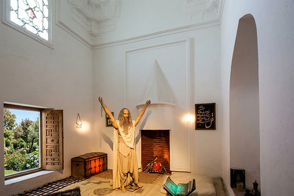
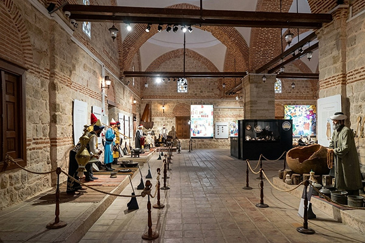

"Seyyah-ı Âlem’in İzinde: Sultan II. Bayezid Külliyesi"
17. yüzyılın en büyük gezginlerinden Evliya Çelebi, ömrünü diyar diyar gezerek geçirmiş, gördüğü şehirleri, insanları ve eserleri ölümsüz eseri Seyahatnâme’de toplamıştır. Onun kalemi, yalnızca gördüğünü yazan bir seyyahın değil; aynı zamanda hisseden, yorumlayan ve hayranlık duyan bir gözlemcinin izlerini taşır.
1652 yılında yolu Edirne’ye düştüğünde ise karşılaştığı eserler arasında onu en çok etkileyen yapılardan biri, Sultan II. Bayezid Külliyesi olmuştur. Bu eşsiz yapı topluluğu karşısında duyduğu hayranlığı şu sözlerle dile getirir:
Evliya Çelebi’nin anlatımında külliye, yalnızca taş ve kubbelerden oluşan bir yapı değil; adeta yaşayan bir organizmadır. Her detayıyla düşünülmüş, insanın hem bedenine hem ruhuna hitap eden bir düzen içinde inşa edilmiştir.
Külliyenin merkezinde yer alan büyük kubbe, sekiz köşeli planıyla dikkat çeker. Bu kubbenin altında yer alan sekiz kemer, mekâna hem estetik hem de fonksiyonel bir düzen kazandırır. Her kemerin altında odalar bulunur; bu odalar kışlık ve yazlık olarak planlanmıştır. Böylece yapı, mevsim şartlarına uygun bir yaşam ve tedavi alanı sunar.
Evliya Çelebi’nin dikkatini çeken en ilginç detaylardan biri ise kubbenin tepesinde yer alan altın yaldızlı bayraktır. Rüzgârın yönüne göre döen bu zarif yapıyı şu sözlerle anlatır:
“Ne taraftan rüzgâr eserse, o bayrak o tarafa döner. Garip görünüştür.”
Odaların mimari düzeni de son derece anlamlıdır. Her odanın bir penceresi dışarıdaki ağaçlık alana açılırken, diğer penceresi merkezdeki şadırvanlı havuza bakar. Böylece hasta, hem doğayla hem de suyun huzur veren sesiyle sürekli temas halindedir.

Darüşşifa’yı diğer hastanelerden ayıran en önemli özelliklerden biri, uygulanan tedavi yöntemleridir. Evliya Çelebi’nin aktardığına göre burada hastalar yalnızca ilaçlarla değil; sanat ve doğanın bir araya geldiği bütüncül bir yaklaşımla tedavi edilmektedir.
Haftanın belirli günlerinde gelen hanende ve sazende toplulukları, rast, neva ve segâh makamlarında eserler icra ederek hastaların ruhunu dinlendirir. Merkezde bulunan havuzdan yükselen su sesi ise mekânın akustiği sayesinde tüm kubbe altında yankılanır. Çelebi bu durumu şöyle tasvir eder:
“Berrak sular çağlayarak havuza girer, fıskiyelerden yükselerek kubbenin göbeğinde toplanır.”
Bahar aylarında hastalara sunulan yasemin, karanfil, lale ve sümbül gibi çiçekler de tedavinin bir parçasıdır. Bu uygulama, günümüzde aromaterapi olarak bilinen yöntemin erken bir örneğidir.
Sultan II. Bayezid Külliyesi yalnızca bir sağlık merkezi değil, aynı zamanda güçlü bir sosyal dayanışma sistemidir. İmareti sayesinde zengin-fakir ayrımı yapılmaksızın herkese yemek sunulmakta; yolcular, hastalar ve ihtiyaç sahipleri burada ağırlanmaktadır.
Evliya Çelebi’nin ifadesiyle burası, “çeşitli hastalıklara tutulmuş zengin ve fakir, ihtiyar ve genç” insanların bir arada bulunduğu bir şifa ve merhamet merkezidir. Bu yönüyle külliye, Osmanlı’nın vakıf anlayışının en gelişmiş örneklerinden biri olarak öne çıkar.

Evliya Çelebi yalnızca külliyeyi değil, Edirne şehrini de detaylı şekilde anlatır. Ona göre Edirne:
Bu söz, sağlık hizmetlerinin yalnızca gerçek ihtiyacı olanlara sunulması gerektiğini vurgulayan güçlü bir etik mesajdır.
Evliya Çelebi, hayatını şu sözlerle özetler: “Çocukluğumdan beri seyahat aşkıyla diyar diyar gezip, gördüğüm her şeyi araştırarak yazdım.” Onun bu yaklaşımı sayesinde bugün, yüzyıllar öncesinin dünyasını adeta yeniden görme fırsatı bulmaktayız.
| Konu | Evliya Çelebi'nin Gözlemi |
|---|---|
| Darüşşifa | "Dil ile tarif edilmez, kalemler ile yazılmaz." |
| Tedavi | Musiki, su sesi ve çiçek kokularıyla ruhun teskini. |
| Sosyal Yapı | Zengin-fakir, genç-ihtiyar ayırt etmeyen merhamet. |
Külliyenin sessiz koridorlarında yürürken, dört asır önce hastalara şifa veren su sesini duymak ve Osmanlı’nın insana verdiği değeri yerinde görmek mümkündür. Burası yalnızca bir külliye değil; şifanın, ilmin ve merhametin zamana meydan okuyan bir anıtıdır.